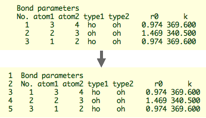
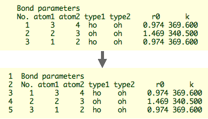

Filter Kit How-to
In the research of chemistry, we sometimes a simple processing of text files. Ruby is particularly suitable for such purposes. To make the use of Ruby easier, Molby provides a special capability called "filter kit" (version 0.6.4 and later). The name originates from the "UNIX" culture, where small programs for text processing are called "filters".
Here is a description of making a filter script. As a demonstration, the filter here is a very simple function; it appends a sequential line number on each line.
 

To write a filter, we create a new text file, with extention ".rb" or ".mrb". Former is conventional as a Ruby script, but latter may be useful to specify Ruby scripts for Molby.
We start from the following line:
Dialog.filter_kit("Filter Sample", "This is a sample filter.") { |args|
The method Dialog.filter_kit takes two arguments, the window title and the message. It also requires a block, which actually contains the main program.
When the user presses the "Select Files" button and choose files (which can be multiple), the block is executed with the array of the chosen file names as the argument. The block body is written as follows:
1 Dialog.filter_kit("Filter Sample", "This is a sample filter.") { |args| 2 args.each { |fname| 3 fp = open(fname, "r") 4 if fp == nil 5 error_message_box("Cannot open file: #{arg}") 6 next 7 end 8 puts fname 9 a = fp.readlines 10 fp.close 11 File.rename(fname, fname + "~") 12 fp2 = open(fname, "w") 13 a.each_with_index { |ln, n| 14 ln = (n + 1).to_s + " " + ln 15 fp2.print ln 16 } 17 fp2.close 18 }
- Line 2: The code in the following braces (
{}) is repeated over all files. - Line 3: Open the file for reading.
- Lines 4-7: If the file cannot be opened, then show the error message and continue to the next file.
- Line 8: Display the filename as information. The output will be displayed in the text box within the filter dialog.
- Line 9: Read all lines from the file and store in an array.
- Line 10: Now we are done with this file, so close the file.
- Line 11: Rename the file name with a tilda (~) at the end. (It is also possible to change the extension, for example; however, you need to learn about "regular expression" to write the code.)
- Line 12: Open the file with the same name, this time for writing. We also need error handling for this operation as in line 4-7, which is omitted here for clarity.
- Line 13: Repeat the following block (the code in the braces) for all elements in the array. The element and its index are given to the block as
lnandn, respectively. - Line 14: Append the line number.
(n + 1)denotes the line number (because the array index begins with zero), andto_sgenerates a String object from an Integer. - Line 15: Write the line to the file.
- Line 17: Close the file.
The above text is saved as "filter_sample.rb" (the filename can be arbitrary except for the extension). Open it with Molby, and you will get the filter running.